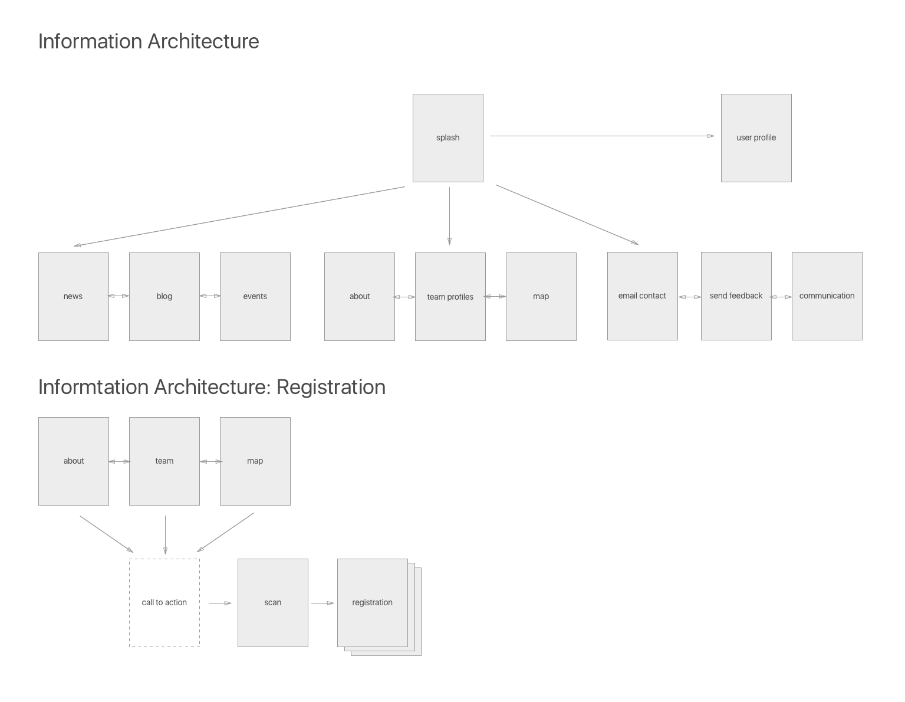
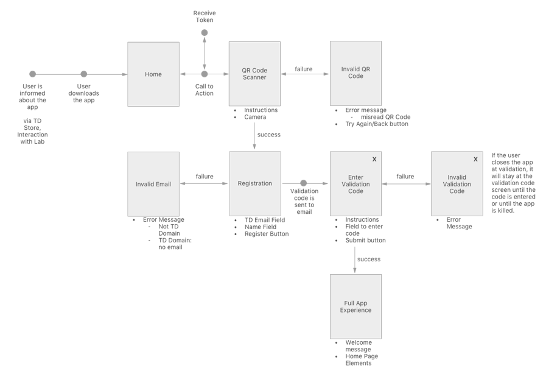
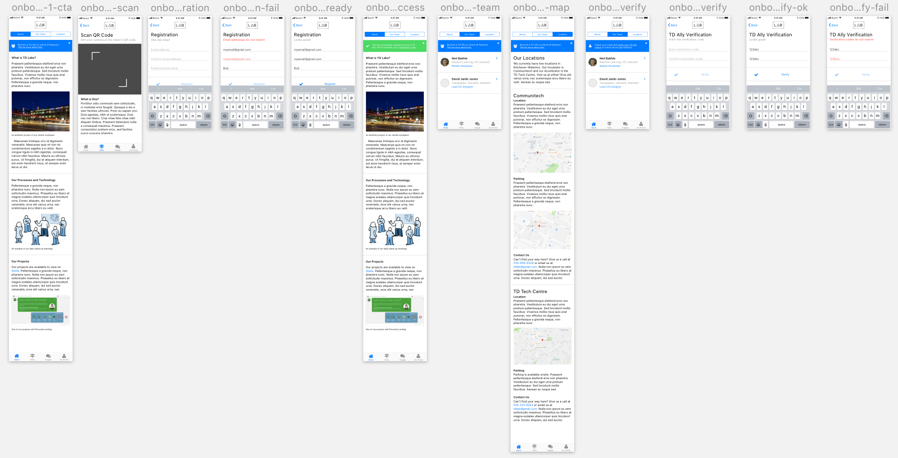
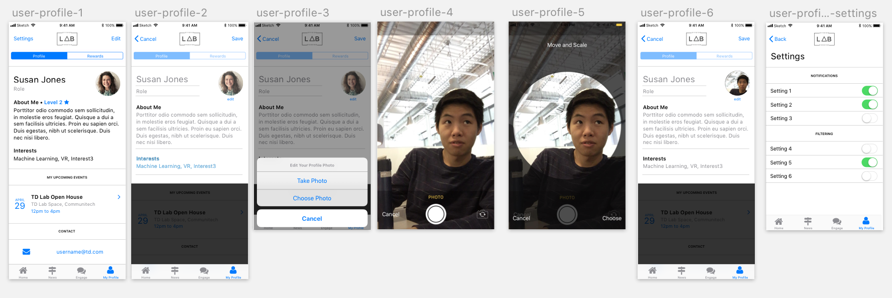

Normandy was one of the projects I worked on during my time at TD Lab. This project, a mobile app, was intended to be used as an engagement piece between the lab and anyone who is interested in learning more about what the lab is, the team at the lab, as well as projects that the lab is working on.
There are over 80000 employees working at TD and the lab team has a lean full-time team of a dozen members and ten to fifteen co-op students hired from local universities every term. Besides scattered articles, lab social media accounts and word of mouth, it is difficult to learn about TD Lab as an employee who is not working with the lab or near the lab. There is no website or digital experience to learn more about the lab, compared to a competitor such as Scotiabank, where their digital factory has its own website and provides information on their team and the work they do.
As part of the project’s inception, business goals were provided to guide the initial direction in which the project was to go. The following are four goals that the stakeholders of the project wished to accomplish:
Online surveys and user interviews were created and performed to identify the target audiencee or the app. Through the survey, 3 personas were identified: potential hires, past employees of TD Lab (including co-ops) and current employees. In the user interviews, questions that were asked aimed to discover motivations behind using a mobile app and the level of engagement desired with TD Lab in a digital experience.
Next, a hierarchical task analysis was created to discover some problems with the current way of contacting a team member.
Taking into account the research performed and the business objectives, below is a list of requirements that the app needed to fulfill.
How might we better engage TD labs community of alumni and employee stakeholders to keep them up to date on projects, team members, thought leadership, news and events?
An information architecture was created for the site to help organize the content and to design according to a user's mental model.
Shown below is one of the workflows created for the project.
We opted for a clean, minimalistic design using standard iOS colours and elements. Colours chosen were human interface guideline standards and consistently used throughout:
Article, blog and news items were placed in a simple card-like design:
Onboarding Flow:
Profile Flow:
A prototype was created using Marvel and then I demoed and presented the project at the quarterly Innovation Council meeting where the lab presents projects to the technology executives from TD. The designs of the app were well received and stakeholders of the project were satisfied. The team is looking towards a mid-June release date.
Slice
tribel